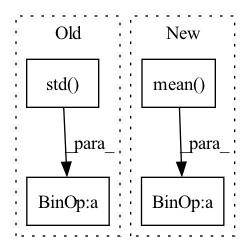

Pattern ID :1799
Before Change
feature_fake = self.max_pooling_1d(feature_fake.unsqueeze(dim=1))
mask = self.max_pooling_1d(mask.unsqueeze(dim=1))
// Normalize features
feature_real = (feature_real - feature_real.mean()) / feature_real.std()
feature_fake = (feature_fake - feature_fake.mean()) / feature_fake.std()
// Calc l1 loss of the real and fake feature conditionalized by the corresponding mask
loss = loss + torch.mean(torch.abs((feature_real - feature_fake) * mask))
// Average loss with number of featuresAfter Change
// Normalize features
union = torch.cat((feature_real, feature_fake), dim=0)
feature_real = (feature_real - union.mean()) / union.std()
feature_fake = (feature_fake - union.mean() ) / union.std()
// Calc l1 loss of the real and fake feature conditionalized by the corresponding mask
loss = loss + torch.mean(torch.abs((feature_real - feature_fake) * mask))
// Average loss with number of featuresIn pattern: SUPERPATTERN
Frequency: 3
Non-data size: 4
Instances Fragment ID: 6979498
Project Name: christophreich1996/semantic_pyramid_for_image_generation
Commit Name: 9fabb52baeb908f73e6fb4ac0bbeaa5965bdfb42
Time: 2020-04-29
Author: 34400551+ChristophReich1996@users.noreply.github.com
File Name: lossfunction.py
M Class Name: SemanticReconstructionLoss
N Class Name: SemanticReconstructionLoss
M Method Name: forward(4)
N Method Name: forward(4)
M Parent Class: nn.Module
N Parent Class: nn.Module
M File Name: lossfunction.py
N File Name: lossfunction.py
M Start Line: 48
M End Line: 57
N Start Line: 48
N End Line: 58
Before Change
"in torch.std() returning nan"
)
x_mean[i, :] = x[i, :, :].mean(dim=1)
x_std[i, :] = x[i, :, :].std(dim=1)
// make sure x_std is not zero
x_std += self.div_guard
return (x - x_mean.unsqueeze(2)) / x_std.unsqueeze(2)
class DitherAudio(nn.Module):After Change
self.div_guard = 1e-5
def forward(self, x: torch.Tensor) -> torch.Tensor:
x_mean = x.mean(dim=2, keepdim=True) .detach()
x_std = x.std(dim=2, keepdim=True).detach()
// make sure x_std is not zero
x_std += self.div_guard
return (x - x_mean) / x_std
class DitherAudio(nn.Module): Fragment ID: 6979502
Project Name: scart97/thunder-speech
Commit Name: 868b3d50886a7e0d85f988328f18e7c60aa81bab
Time: 2021-02-24
Author: scart.lucas@gmail.com
File Name: src/thunder/quartznet/preprocess.py
M Class Name: FeatureBatchNormalizer
N Class Name: FeatureBatchNormalizer
M Method Name: forward(2)
N Method Name: forward(2)
M Parent Class: nn.Module
N Parent Class: nn.Module
M File Name: src/thunder/quartznet/preprocess.py
N File Name: src/thunder/quartznet/preprocess.py
M Start Line: 54
M End Line: 68
N Start Line: 54
N End Line: 59
Before Change
// diversity = torch.minimum(var, torch.ones_like(var))
// reg -= diversity
diversity = batchWiseLogit.std( 1) .mean(-1).sigmoid()
// summedProb = batchWiseLogit.sum(1)
// posterior = OneHotCategorical(logits=summedProb)
// prior = OneHotCategorical(probs=torch.ones_like(summedProb) / summedProb.shape[-1])
// reg = torch.distributions.kl_divergence(posterior, prior) / diversity
reg = compute_penalties(batchWiseLogit, allowed_entropy=0.1, individual_entropy_coeff=cv, allowed_js=4.0, js_coeff=cv, cv_coeff=cv, eps=Consts.Eps)
reg = reg / diversity
regs.append(reg)
regs = sum(regs)
return ssimLoss, l1Loss + l2Loss, l1QLoss + l2QLoss, regs // + 10 * stdRegAfter Change
l2QLoss.append(F.mse_loss(latent.detach(), q, reduction="none").mean(axis=(1, 2, 3)))
l1QLoss.append(F.l1_loss(latent.detach(), q, reduction="none").mean(axis=(1, 2, 3)))
l2QLoss.append(0.00001 * F.mse_loss(latent, q.detach(), reduction="none").mean(axis=(1, 2, 3)))
l1QLoss.append(0.00001 * F.l1_loss(latent, q.detach(), reduction="none").mean(axis=(1, 2, 3)) )
l1QLoss = sum(l1QLoss)
l2QLoss = sum(l2QLoss) Fragment ID: 6979500
Project Name: xiaosu-zhu/mcquic
Commit Name: fea4d517415acb825c6282b84ea39c0989abf5fc
Time: 2021-03-23
Author: xiaosu.zhu@outlook.com
File Name: src/mcqc/losses/structural.py
M Class Name: CompressionLossTwoStage
N Class Name: CompressionLossTwoStage
M Method Name: forward(8)
N Method Name: forward(8)
M Parent Class: nn.Module
N Parent Class: nn.Module
M File Name: src/mcqc/losses/structural.py
N File Name: src/mcqc/losses/structural.py
M Start Line: 69
M End Line: 91
N Start Line: 53
N End Line: 60